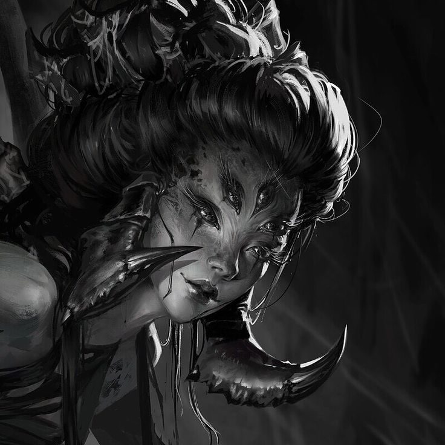
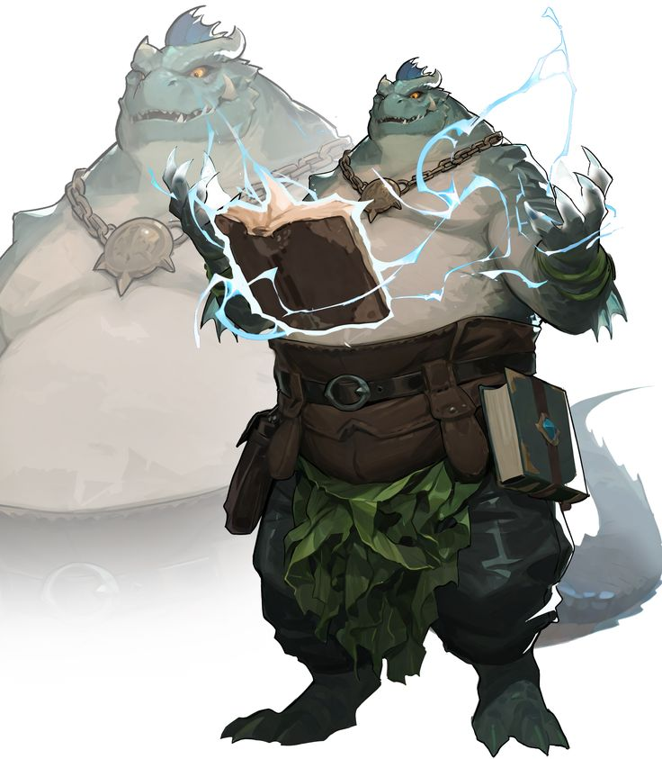
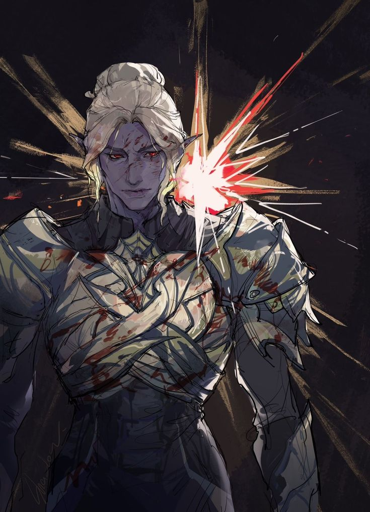

Nascida no Reino Flutuante como a oposição à Bico de Ferro, a Python defendia o direito de existir de um povo dividido pelas diferenças entre as raças. Derrotada na guerra, desapareceu das ilhas, mas nunca por completo.
✦ sombra e lei
As Duas Faces
A SOMBRA
Python
A rede clandestina. Atua por tráfico, esquemas e infiltração para desestabilizar a Dinastia Fênix.
- Opera em segredo
- Realiza experimentos com estriges
- Ligada, pelo folclore, aos sumiços
CENTRO DE PESQUISA VESPER
Instituto Vesper
A filial legal, apresentada como sociedade de estudos e conservação de espécies raras.
- Atua de forma legal
- Instrui estriges selvagens
- Mantém contato com famílias nobres
✦ quem manda, quem morde, quem rasteja
A Hierarquia da Serpente
I · CABEÇA
Quem Decide
A liderança. Define os rumos da organização e responde por ela.
II · PRESA
Quem Morde
Comandantes e especialistas. Executam as operações e dirigem os experimentos.
III · ESCAMA
Quem Se Esconde
Agentes, informantes e infiltrados. Vivem entre os outros sem serem notados.
IV · OVO
Quem Ainda Não Nasceu
Recrutas e novatos em observação. Ainda não sabem de tudo.
✦ documentos
Os Arquivos da Python
DIÁRIO DE CAMPO
Anotações do Escarnos
O relato de um cientista novato que acompanha a expedição de captura do primeiro estrige.
ABRIR DOCUMENTO → ❦CORRESPONDÊNCIA
Carta do Centro Vesper
Relatório do instituto à família Strix sobre a socialização e a reprodução de duas estriges.
ABRIR DOCUMENTO →✦ I · CABEÇA

✦ a python
Vidua Ultio
...
✦ a python
Shade Velkenvelve
...
✦ II · PRESAS

✦ a python
Pandore Mendes
À frente do Centro de Pesquisa Vesper, assina a correspondência da instituição com a família Strix e supervisiona a instrução de estriges.

✦ a python
Nyx Minthara
À frente do Centro de Pesquisa Vesper, assina a correspondência da instituição com a família Strix e supervisiona a instrução de estriges.
✦ III · ESCAMAS

✦ a python
Nome do Agente
Escreva aqui a história do personagem.
✦ IV · OVOS

✦ a python
Escarnos
Sátiro e ovo · cientista novato que ingressou na Python após a guerra para auxiliar nos experimentos com estriges. Registrou em diário a captura do primeiro espécime.